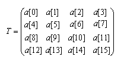

com.docomostar.opt.ui.eruption.Transform
com.docomostar.opt.ui.eruption.Transform
|
|||||||||
| 前のクラス 次のクラス | フレームあり フレームなし | ||||||||
| 概要: 入れ子 | フィールド | コンストラクタ | メソッド | 詳細: フィールド | コンストラクタ | メソッド | ||||||||
Object
public final class Transform
4 x 4 の変換行列を表すクラスです。
配列 a と行列 T の対応関係は以下の通りです。

| フィールドの概要 | |
|---|---|
static int |
MCE_ROTATE_EULER_XYZ
XYZ順に回転を表します(=0)。 |
static int |
MCE_ROTATE_EULER_XZY
XZY順に回転を表します(=1)。 |
static int |
MCE_ROTATE_EULER_YXZ
YXZ順に回転を表します(=2)。 |
static int |
MCE_ROTATE_EULER_YZX
YZX順に回転を表します(=3)。 |
static int |
MCE_ROTATE_EULER_ZXY
ZXY順に回転を表します(=4)。 |
static int |
MCE_ROTATE_EULER_ZYX
ZYX順に回転を表します(=5)。 |
| コンストラクタの概要 | |
|---|---|
Transform()
Transform を生成します。 |
|
Transform(float[] a)
変換行列成分を設定して Transform を生成します。 |
|
| メソッドの概要 | |
|---|---|
void |
copy(Transform src)
変換行列をコピーします。 |
void |
dispose()
Native資源を破棄します。 |
void |
get(float[] r)
変換行列を取得します。 |
void |
multiply(Transform t)
変換行列を乗算します。 |
void |
multiply(Transform t1,
Transform t2)
変換行列を乗算します。 |
void |
set(float[] a)
指定された変換行列を設定します。 |
void |
setIdentity()
恒等変換を設定します。 |
void |
setInvert(Transform src)
逆行列を設定します。 |
void |
setRotate(Vector3D v,
float angle)
回転成分を設定します。 |
void |
setRotateEuler(int type,
Vector3D angles)
回転成分を設定(オイラー指定)します。 |
void |
setScale(float x,
float y,
float z)
スケール成分を設定します。 |
void |
setScale(Vector3D v)
スケール成分を設定(ベクタ指定)します。 |
void |
setTranslate(float x,
float y,
float z)
平行移動成分を設定します。 |
void |
setTranslate(Vector3D v)
平行移動成分を設定(ベクタ指定)します。 |
void |
setTranspose(Transform src)
転置行列を設定します。 |
void |
transPosition(Vector3D v)
頂点を移動します。 |
void |
transPosition(Vector3D v,
Vector3D r)
頂点を移動します。 |
| クラス Object から継承されたメソッド |
|---|
equals, getClass, hashCode, notify, notifyAll, toString, wait, wait, wait |
| フィールドの詳細 |
|---|
public static final int MCE_ROTATE_EULER_XYZ
public static final int MCE_ROTATE_EULER_XZY
public static final int MCE_ROTATE_EULER_YXZ
public static final int MCE_ROTATE_EULER_YZX
public static final int MCE_ROTATE_EULER_ZXY
public static final int MCE_ROTATE_EULER_ZYX
| コンストラクタの詳細 |
|---|
public Transform()
Transform を生成します。
public Transform(float[] a)
Transform を生成します。
a - 4 x 4 の変換行列成分の配列を指定します。
NullPointerException -
a が null の場合に発生します。
IllegalArgumentException -
a.length < 16 の場合に発生します。| メソッドの詳細 |
|---|
public final void set(float[] a)
a - 4 x 4 の変換行列成分の配列を指定します。
NullPointerException -
a が null の場合に発生します。
IllegalArgumentException -
a.length < 16 の場合に発生します。public final void get(float[] r)
r - 変換行列を渡す float 配列を指定します。
NullPointerException -
r が null の場合に発生します。
IllegalArgumentException -
r.length < 16 の場合に発生します。public final void copy(Transform src)
src - コピー元の Transform を指定します。
NullPointerException -
src が null の場合に発生します。public final void setIdentity()
public final void multiply(Transform t)
t を乗算し、結果は自身に格納されます。
t - Transform を指定します。
NullPointerException -
t が null の場合に発生します。
public final void multiply(Transform t1,
Transform t2)
t1 の右から t2 を乗算し、結果は自身に格納されます。
t1 - Transform を指定します。t2 - Transform を指定します。
NullPointerException -
t1 が null または t2 が null の場合に発生します。
public final void setTranslate(float x,
float y,
float z)
x - X軸方向の平行移動成分を指定します。y - Y軸方向の平行移動成分を指定します。z - Z軸方向の平行移動成分を指定します。public final void setTranslate(Vector3D v)
v - 平行移動成分を表す Vector3D を指定します。
NullPointerException -
v が null の場合に発生します。
public final void setRotate(Vector3D v,
float angle)
v - 回転する軸を表す Vector3D を指定します。angle - 角度(1.0=360度) を指定します。
NullPointerException -
v が null の場合に発生します。
IllegalArgumentException -
v が零ベクトルで、angle が 0 以外の場合に発生します。
public final void setRotateEuler(int type,
Vector3D angles)
type - 回転順を指定します。指定できる値は、以下の通りです。
MCE_ROTATE_EULER_XYZ
MCE_ROTATE_EULER_XZY
MCE_ROTATE_EULER_YXZ
MCE_ROTATE_EULER_YZX
MCE_ROTATE_EULER_ZXY
MCE_ROTATE_EULER_ZYX
angles - 各軸の回転成分を表す Vector3D (1.0=360度) を指定します。
NullPointerException -
angles が null の場合に発生します。
IllegalArgumentException -
type が不正な場合に発生します。
public final void setScale(float x,
float y,
float z)
x - X軸方向のスケール成分を指定します。y - Y軸方向のスケール成分を指定します。z - Z軸方向のスケール成分を指定します。public final void setScale(Vector3D v)
v - スケール成分を表す Vector3D を指定します。
NullPointerException -
v が null の場合に発生します。public final void setInvert(Transform src)
src - 逆行列を求める Transform を指定します。
NullPointerException -
src が null の場合に発生します。
ArithmeticException -
public final void setTranspose(Transform src)
src - 転置行列を求める Transform を指定します。
NullPointerException -
src が null の場合に発生します。public final void transPosition(Vector3D v)
v に格納されます。
v - 頂点を表す Vector3D を指定します。
NullPointerException -
v が null の場合に発生します。
ArithmeticException -
public final void transPosition(Vector3D v,
Vector3D r)
r に格納されます。
v - 頂点(移動前)を表す Vector3D を指定します。r - 頂点(移動後)を渡す Vector3D を指定します。
NullPointerException -
v が null または r が null の場合に発生します。
ArithmeticException -
public final void dispose()
|
|||||||||
| 前のクラス 次のクラス | フレームあり フレームなし | ||||||||
| 概要: 入れ子 | フィールド | コンストラクタ | メソッド | 詳細: フィールド | コンストラクタ | メソッド | ||||||||
NTT DOCOMO,INC.
本製品または文書は著作権法により保護されており、その使用、複製、再頒布および逆コンパイルを制限するライセンスのもとにおいて頒布されます。NTTドコモ（その他に許諾者がある場合は当該許諾者も含めて）の書面による事前の許可なく、本製品および関連する文書のいかなる部分も、いかなる方法によっても複製することが禁じられます。フォントを含む第三者のソフトウェアは、著作権法により保護されており、その提供者からライセンスを受けているものです。
Sun、Sun Microsystems、Java、J2MEおよびJ2SEは、米国およびその他の国における米国 Sun Microsystems,Inc.の商標または登録商標です。サンのロゴマークは、米国 Sun Microsystems, Inc.の登録商標です。
FeliCaは、ソニー株式会社が開発した非接触ICカードの技術方式です。FeliCaは、ソニー株式会社の登録商標です。
「ｉモード」、「ｉアプリ／アイアプリ」、「ｉ-αppli」ロゴ、「DoJa」はNTTドコモの商標または登録商標です。
その他記載された会社名、製品名などは該当する各社の商標または登録商標です。